Behavioural Economics
and Consumer Decision Making
#4
November 2023
Let’s start with an experiment
- To access the experiment, you can either:
- Go to https://classex.uni-passau.de
- Scan the QR code below
Instructions
You will be randomly matched in pairs. You will not know who your match is. The experiment will consist of a single decision round.
Roles: proposer (
 ), respondent (
), respondent ( ).
).At the beginning of the experiment,
 will provisionally receive an endowment of 10 Euros.
will provisionally receive an endowment of 10 Euros. proposes how to split the 10 Euros between
proposes how to split the 10 Euros between  and
and  . Any split is permitted, including keeping all money or giving it all away.
. Any split is permitted, including keeping all money or giving it all away.
 will provisionally receive an endowment of
will provisionally receive an endowment of Instructions (cont’d)
 can decide to accept or reject the offer.
can decide to accept or reject the offer.If
 accepts the offer, then the players split the money in the way
accepts the offer, then the players split the money in the way  suggested.
suggested.Conversely, if
 rejects the offer, then both players get nothing.
rejects the offer, then both players get nothing.Communication between participants is prohibited.
Let’s begin
Select your institution: LUISS Guido Carli
Choose your account name: Behavioral Economics and Consumer Decision Making II
Choose your account type: participant
Enter your password: Daje123
Quesion for the proposers: why did you behave the way you did?
To answer (anonymously) you can either:
- Go to www.slido.com and enter the code
2392 300. - Scan the QR code below.
- Go to www.slido.com and enter the code
Your answers will be displayed on the next slide.
Quesion for the respondents: why did you behave the way you did?
To answer (anonymously) you can either:
- Go to www.slido.com and enter the code
1452 045. - Scan the QR code below.
- Go to www.slido.com and enter the code
Your answers will be displayed on the next slide.
Quesion for the proposers: why did you behave the way you did? (cont’d)
Quesion for the respondents: why did you behave the way you did? (cont’d)
The ultimatum game
The experiment you took part in is known as the ultimatum game (Güth, Schmittberger, and Schwarze 1982).
It is a sequential (rather than simultaneous) game: what the Proposer will get depends on what the Responder does, so the Proposer has to think about the likely response of the Responder.
Read the paper HERE
The ultimatum game (cont’d)
- If the Responder were purely self-interest, and cared only about their own payoff, then they would accept any positive offer because something, no matter how small, is always better than nothing.
If the Proposer believed that the Responder would accept any offer, then the Proposer would offer the minimum possible amount (e.g. one cent).
Does this prediction match the experimental data? No.
The ultimatum game (cont’d)
What do experimental results show?
- Median offer: around 40 percent of the money
- Offers above 40 percent are usually accepted
- Offers below 20 percent are usually rejected
Thus, a Responder who thinks that the Proposer’s offer is unfair, or that the offer is insultingly low for some other reason, may be willing to sacrifice their payoff to punish the Proposer.
Why should the proposer make a high offer?
- Altruism, fear of rejection, fairness
Is fairness peculiar of humans?
Fairness
A way to evaluate an allocation based on one’s conception of justice.
Do fairness and equality go hand-in-hand?
Cappelen et al. (2014) conducted an experiment to investigate the relation between perceived fairness and equality.
Main results:
- The human brain instinctively reacts to unfairness.
- An equal income distribution may not be perceived as fair when contributions are unequal.
- Your brain is a big fan of fairness, but not necessarily of equality!
Read the paper HERE
Fairness and equality
Let’s move on
- We have seen that people value fairness and take pleasure in giving to others.
- So why do you avoid street fundraisers?
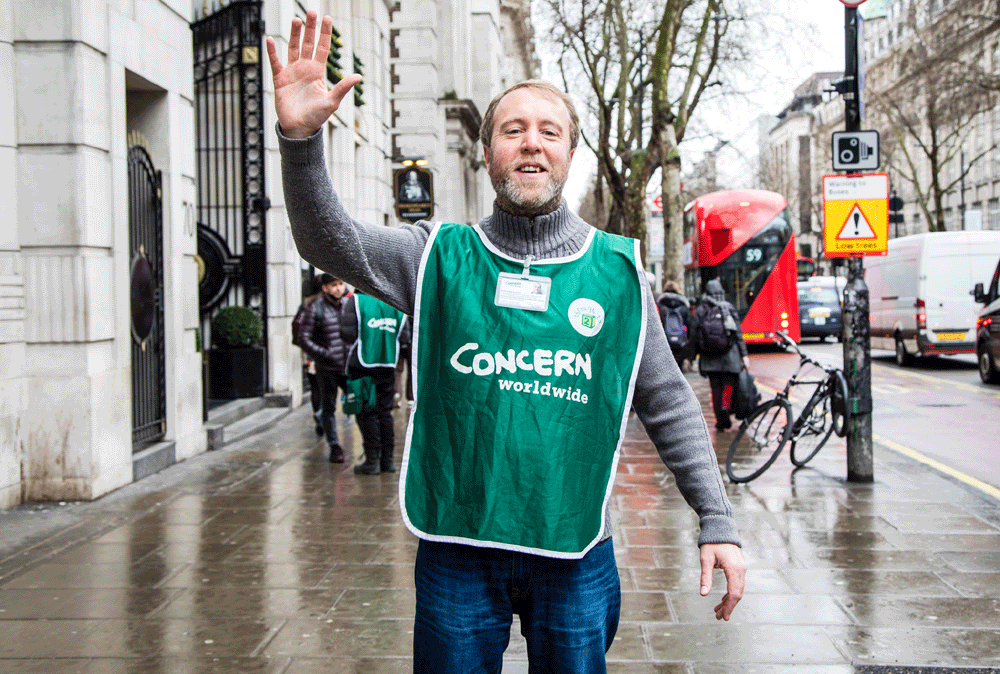
Why people do not give?
- Andreoni, Rao, and Trachtman (2017): people avoid empathic stimulation to regulate their giving and guilt.
- Just as we should not eat our favourite dessert at every opportunity, we also cannot give at every opportunity, even though we might wish we could do both.
- That is, just as an eater can avoid exposure to the dessert, an altruist can avoid being asked to give.
Read the paper HERE
Social pressure and charitable giving: experimental evidence
- A door-to-door fundraiser in Chicago for two charities:
- A local children’s hospital (La Rabida), which has a reputation as an excellent hospital for children.
- An out-of-state charity (East Carolina Hazard Center, ECU) unfamiliar to most solicitees.
- Charities were chosen so that most households would prefer one (La Rabida) to the other (ECU).
- Some households were informed about the exact time of solicitation with a flyer on their doorknobs.
Social pressure and charitable giving: experimental evidence (cont’d)
- Treatment 1: a flyer on the doorknob notified households one day in advance about the time interval in which a solicitor would arrive at their homes the next day.
Treatment 2: the flyer included an opt-out box to be checked if the household did not want to be disturbed.
Baseline condition: solicitors approached households in the usual manner with no flyer.
Social pressure and charitable giving: experimental evidence (cont’d)
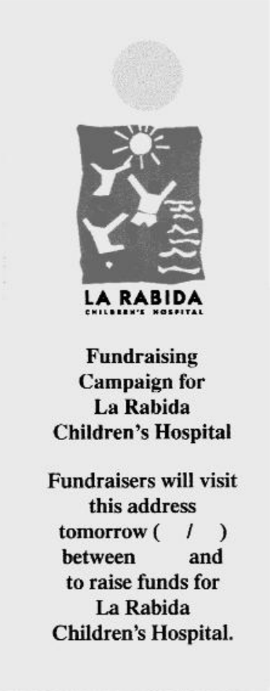
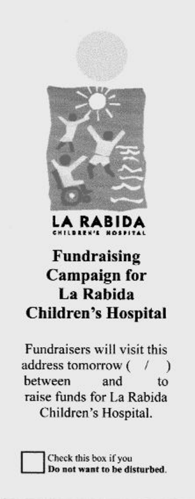
Social pressure and charitable giving: experimental evidence (cont’d)
| Visist | Social pressure cost | |
|---|---|---|
| Baseline | Unexpected | High |
| Treatment 1 (flyer) | Expected | High |
| Treatment 2 (flyer + opt-out) | Expected | Low |
- Question: why is the social pressure cost high in the Baseline and in Treatment 1? Why is this cost low in Treatment 2?
Social pressure and charitable giving: experimental evidence (cont’d)
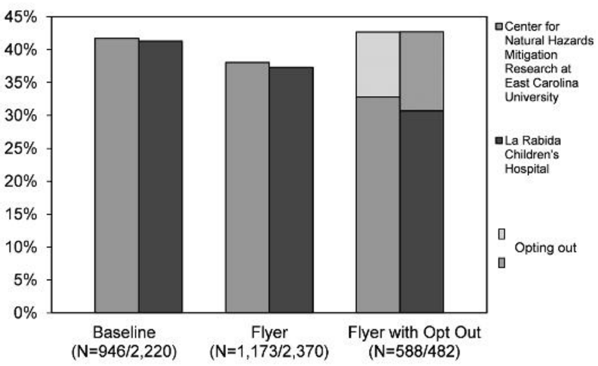
Social pressure and charitable giving: experimental evidence (cont’d)
A flyer announcing the visit reduced the fraction of households opening the door by about 4 percentage points relative to the baseline treatment with no flyer.
The fraction of households opening the door was further lowered, by an additional 5 to 6 percentage points, by the presence of an opt-out option on the flyer.
This is evidence of social pressure: when informed of a visit by a solicitor, households attempt to avoid the interaction, especially when doing so has little cost, as in the opt-out treatment.
Social pressure and charitable giving: experimental evidence (cont’d)
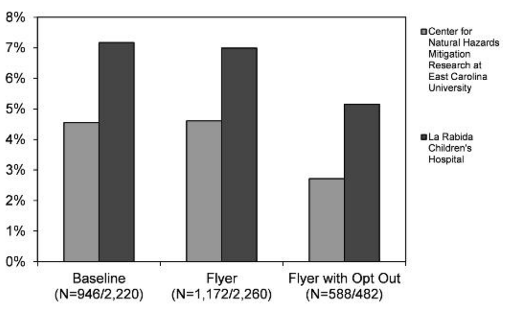
Social pressure and charitable giving: experimental evidence (cont’d)
The flyer per se does not affect giving.
Possible explanation:
- The advance notice increases the presence at home of the altruistic givers and lowers the presence of those who give due to social pressure.
- If these two forces are of about the same size, then the overall impact is zero.
Social pressure and charitable giving: experimental evidence (cont’d)
The opt-out option significantly reduces giving.
Possible explanation:
- In the opt-out treatment the psychological cost of avoiding the fund-raiser is substantially lowered, and giving decreases proportionally.
- Remark: if giving were exclusively due to altruism, then the opt-out option would not affect giving rates.
Social comparisons
People often compare their behaviour and opinions with those of others.
Many decisions are affected by these comparisons.
We are going to see how, by taking advantage of social comparisons, information provision policies can achieve their desired result.
Social comparisons: experimental evidence
Allcott (2011) examined one of the most famous non-price energy conservation programmes in the United States, which is run by a company called OPOWER.
OPOWER mails Home Energy Report letters that compare a household’s energy use to that of similar neighbours and provide energy conservation tips.
A household’s comparison group comprises about 100 geographically-proximate houses with similar characteristics, including similar square footage and same heating type (gas vs. electric).
Read the paper HERE
Social comparisons: exp. evidence (cont’d)
- Households are labelled as:
- “Great ☺️☺️” if they use less energy than the 20th percentile of their neighbour comparison group.
- “More than average” if they use more than the mean.
- “Good ☺️” if they are in between.
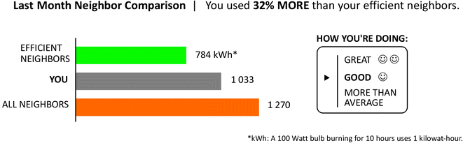
Social comparisons: exp. evidence (cont’d)
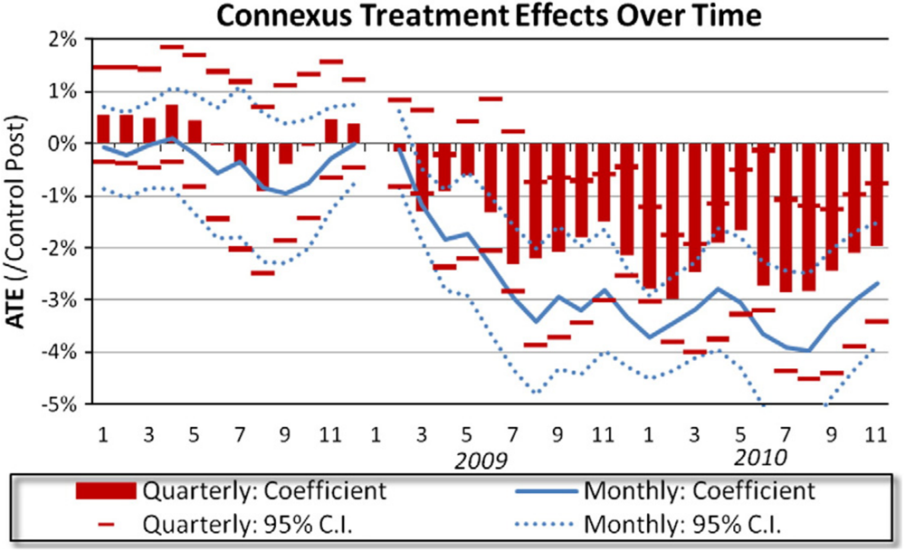
Social comparisons: exp. evidence (cont’d)
After treatment begins, the treatment effects take some months to ramp up to a steady state.
Treatment effects are higher in the winter and summer months, when heating and cooling loads increase energy demand.
After nearly two years of continuing treatment, there is no evidence of any decline in the treatment effects.
No evidence of boomerang effects, i.e households with low energy consumption levels did not increase their consumption due to social comparisons.
Social recognition
- To what extent does social recognition motivate prosocial individuals?
Goette and Tripodi (2023) sought to answer this question by conducting a field + survey experiment conducted jointly with Avis Toscana.
Donors were asked to donate blood or plasma in the month following the authors’ experimental Email/WhatsApp communications.
Primary outcome of interest: donations made during this month.
Read the paper HERE
Social recognition: exp. evidence
- Approaches for providing social recognition:
- Inform donors at the beginning of the study about their peers’ recent engagement in civic activities (Peer).
- Inform donors at the beginning of the study about their peers’ recent engagement, and at endline about who donated during the study (Peer + Visibility).
- Social media campaign that rewards participants who donate by listing their names on the Facebook pages of Avis Toscana (Facebook).
Social recognition: exp. evidence (cont’d)
- Benchmarks: not being solicited to donate (No ask) and being solicited with a simple request (Simple ask).
- Experimental variation in the social proximity of peers: random groups of twenty close/distant donors with whom subjects can relate to.
- We will not discuss this here.
- Communication channels:
- Avis’ email (reading rate: 17%)
- Avis’ WhatsApp account (reading rate: >90%)
Social recognition: exp. evidence (cont’d)
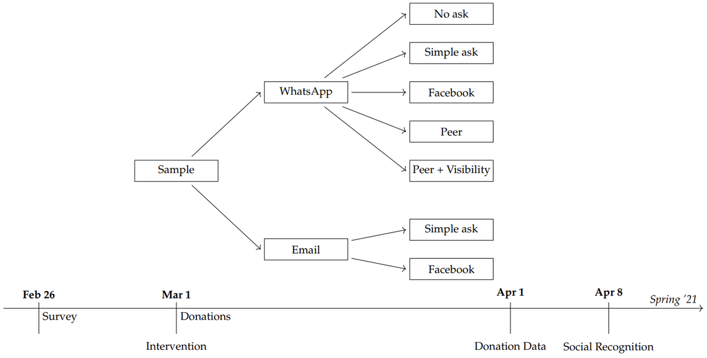
Social recognition: exp. evidence (cont’d)
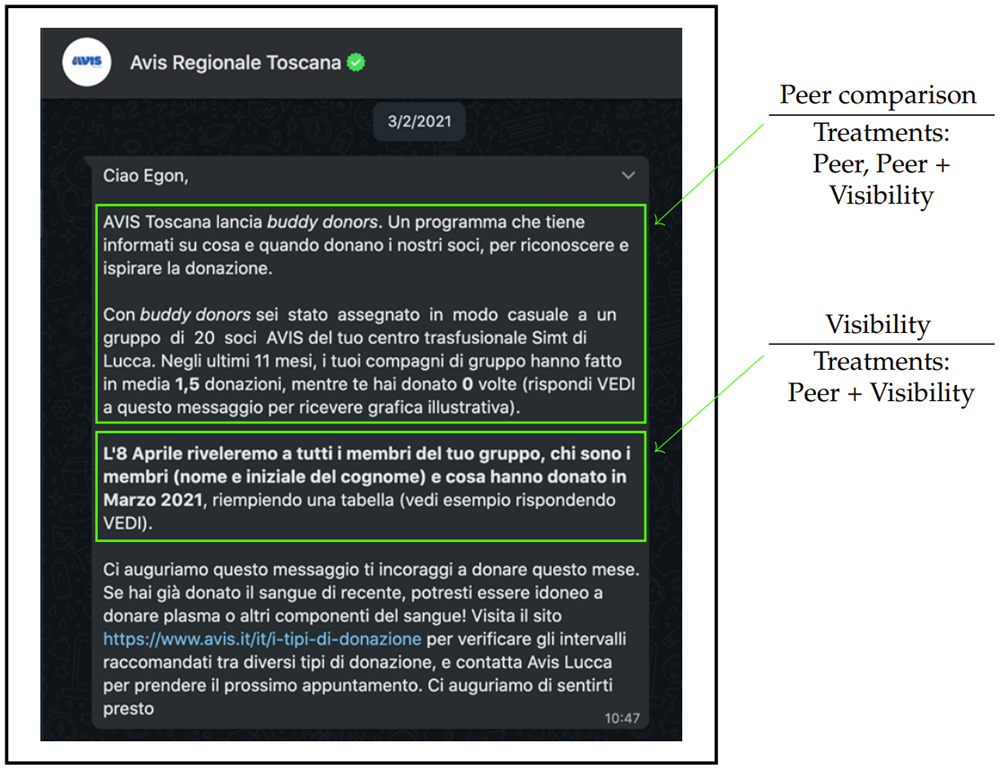
Social recognition: exp. evidence (cont’d)
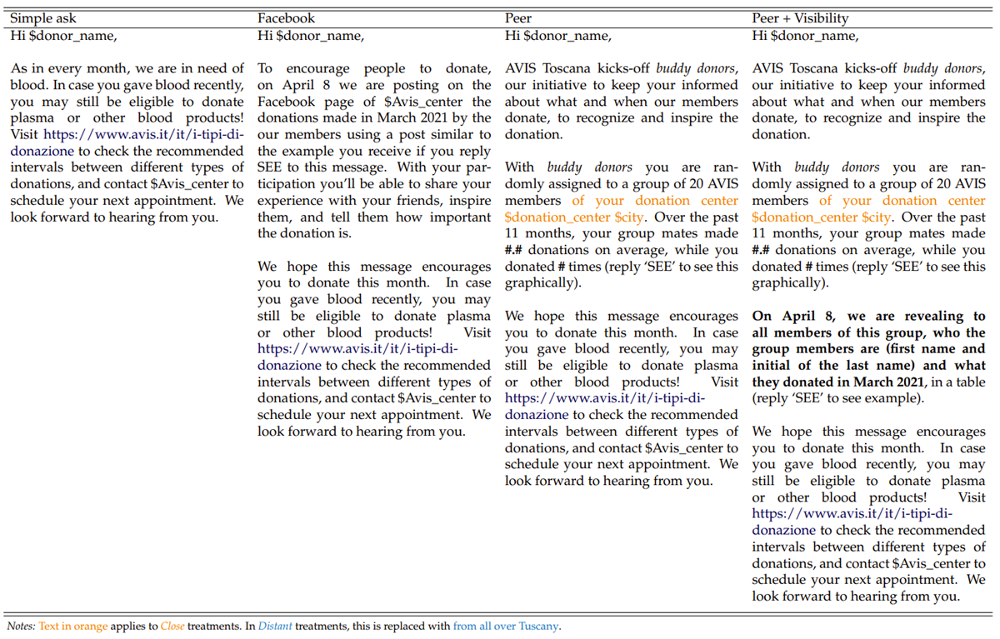
Social recognition: exp. evidence (cont’d)
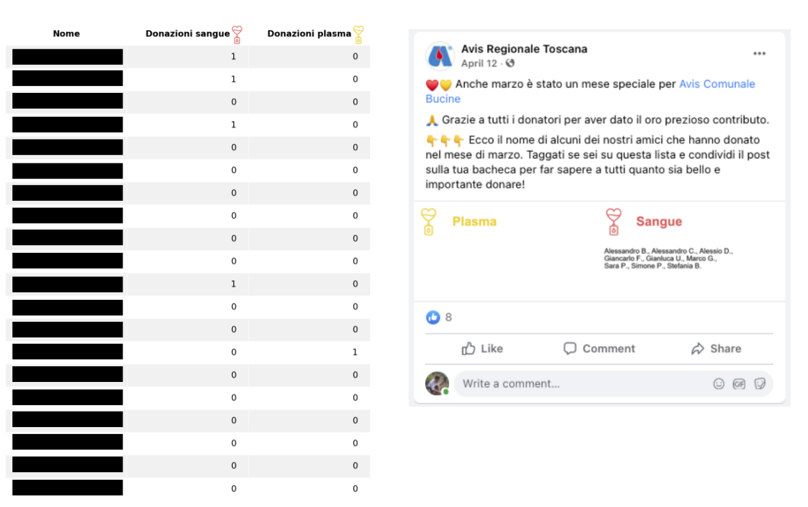
Social recognition: exp. evidence (cont’d)
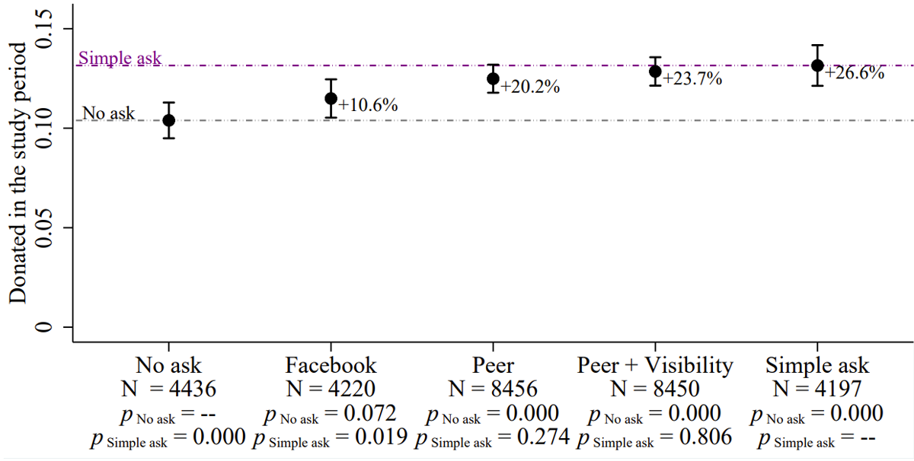
Social recognition: exp. evidence (cont’d)
In the No ask control condition, the share of participants who give blood in the study period is 0.10
Offering donors the prospect of being recognized on social media (Facebook) increased donations by 10.6 percent.
Donations also increase significantly when donors were offered peer comparisons (Peer and Peer + Visibility).
- Making prospective donations visible among group members makes little difference.
None of these social rewards are more effective than a Simple ask, which increases donations by 26.6 percent
Social recognition: exp. evidence (cont’d)
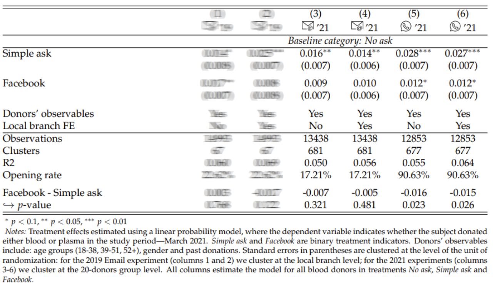
Social recognition: exp. evidence (cont’d)
The difference between the No ask and Facebook conditions is not statistically significant.
That is, offering social recognition on Facebook does not seem to increase donations compared to the control condition.
Question: Why?
Social recognition: exp. evidence (cont’d)
Question: Why do you think offering social recognition on Facebook did not increase donations compared to the control condition?
To answer (anonymously) you can either scan the QR code below or go to www.slido.com and enter the code
3609 416.
Social recognition: exp. evidence (cont’d)
Social recognition: exp. evidence (cont’d)
Question: Why do you think offering social recognition on Facebook did not increase donations compared to the control condition?
Possible explanation #1: donors may dislike the way social recognition was implemented via Facebook channels.
- To test for this, a random sample of donors was surveyed at the end of donation window. Sentiment towards treatment communications is similarly favourable in the Simple ask and Facebook treatments.
- Thus, the experimental evidence does not support this hypothesis.
- To test for this, a random sample of donors was surveyed at the end of donation window. Sentiment towards treatment communications is similarly favourable in the Simple ask and Facebook treatments.
Social recognition: exp. evidence (cont’d)
Question: Why do you think offering social recognition on Facebook did not increase donations compared to the control condition?
Possible explanation #2: people may shy away from activities that can make them appear image concerned.
This hypothesis is consistent with the results of GT’s survey experiment.
Repeat donors are less concerned about signalling altruism than they are about not being perceived as image seeking.
Social recognition: exp. evidence (cont’d)
- Wrap-up:
- Social recognition does not motivate repeated blood donors more than a simple request to donate.
- Increasing the visibility of good actions can backfire when prosociality is perceived as image-seeking.
Key concepts
- Before you move on, take time to review these concepts:
- Ultimatum game
- Fairness
- Social pressure
- Social comparisons
- Social recognition
Social pressure and charitable giving
Alternatively, individuals may give, despite not liking to give to the charity, because the solicitor effectively placed them under social pressure to give.
These givers would rather avoid the personal interaction with the solicitor.
DellaVigna, List, and Malmendier (2012) tested this idea experimentally.
Read the paper HERE